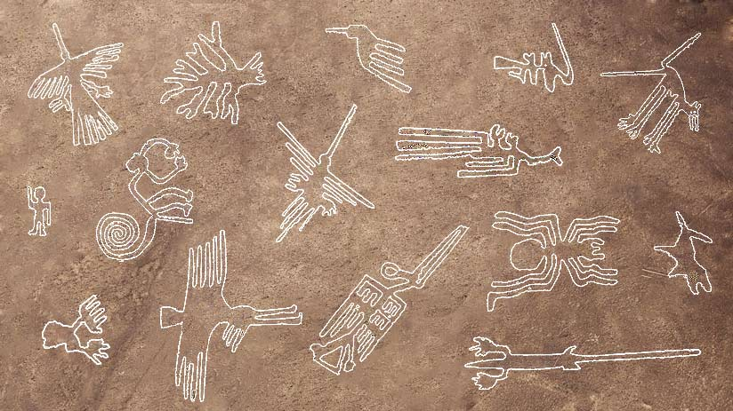
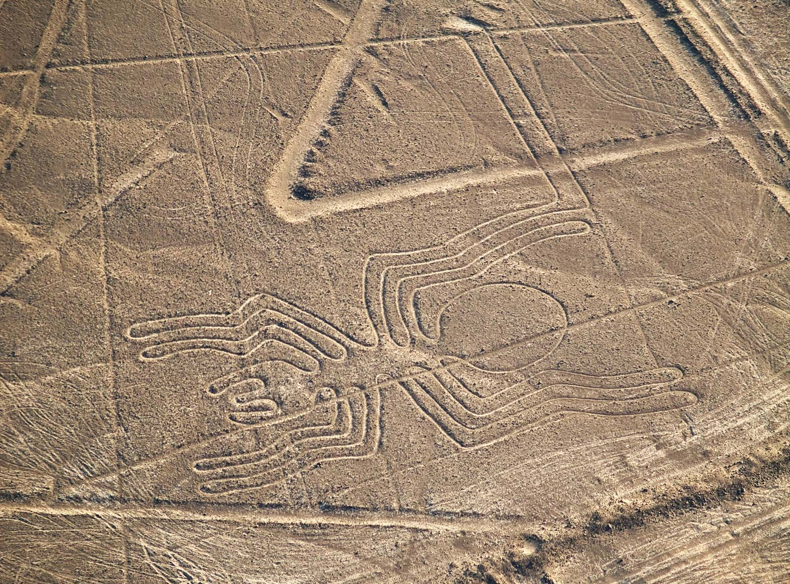

LINEAS DE NAZCA


Las líneas de Nazca y geoglifos de pampas de Jumana o simplemente líneas de nazca son antiguos geoglifos que se encuentran en las pampas de Jumana, en el desierto de Nazca, entre las poblaciones de Nazca y Palpa, en el departamento de Ica (Perú). Fueron trazadas por la cultura nazca y están compuestas por varios cientos de figuras que abarcan desde diseños tan simples como líneas hasta complejas figuras zoomorfas, fitomorfas y geométricas que aparecen trazadas sobre la superficie terrestre.